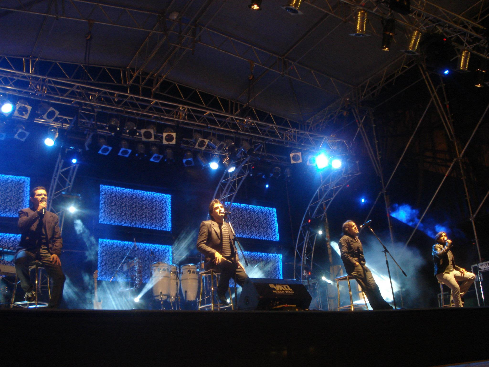
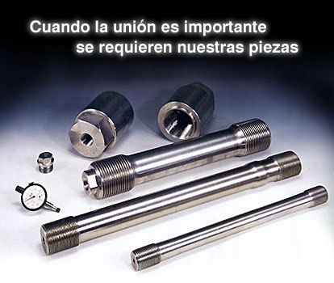

Encargado de mantenimiento de artefactos de iluminacion, cabezales moviles, etc. Manejo y Programacion de consolas e interfaces de iluminacion para eventos de sonido en vivo, discotecas y eventos empresariales. (2008-2010)
Citopreparación, screening de PAP y realización de cortes histológicos en biopsias intraoperatorias por congelación en el servicio de anatomía patológica de la Clínica Güemes de la localidad de Luján. (2010 - 2014).
Data entry, PCP (programación y control de la producción), Analista de datos: implementación de herramientas de business inteligence, (Power bi). Transformacion y extraccion de datos, confección de dashboards interactivos para toma de decisiones a corto plazo. (2015-actualidad).